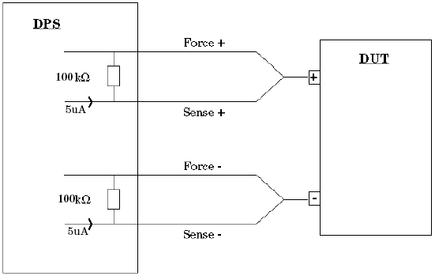

DpsConnectivity
This test method checks that the DPS force and sense wires are correctly connected to the DUT board. The force voltage is set to 0V and then an offset of 5µA is introduced on the sense line. The force and sense voltages are then measured:
- if a connection exists at the DUT between the force and sense lines, then the voltages will be equal and a PASS result is returned
- if no connection exists, then the 5µA current can only flow through the resistor (see the
figure below), and a FAIL result is returned because the force and sense voltages are
different.

This test method supports test table. But you need to enter the test names manually in the parameter. You can use both test table and testflow limits in a testflow. The test table has higher priority than testflow limits. If a test name used in the test flow is defined in both test table and testflow limits, the value defined in the test table will be used.
Parameter |
Type |
Description |
|---|---|---|
dpsPins |
PinString |
pins to be tested. This can be @ for all applicable pins, or any number of applicable single pins.Valid pin types include DPS pins. |
testName |
string |
The test names to be used as limits. Default is If you want to use the test names defined in the test table or testflow limits, type in the test names manually. Make sure the test names are in the Test name column of the test table (Refer to Structure of a TMLimits CSV file) or in the Test Name column of Tests page of Flow Data Editor. |
output |
string |
Controls how to output the per pin test result. It can be:
ShowFailOnly: Only outputs the failed pin result to the report window. |
samples |
int |
Controls how many samples are used to perform the measurement. The default value is 1. The valid value range is (1,128). |
Limits
DPS_ForceSense |
It is only used to enter test number. |
Implementation pseudo code
IF connected THEN disconnect DUT ENDIF do force/sense check with FW PDMM datalog test results
Functional changes
- Introduced before SmarTest 6.3.2
- SmarTest 6.5.0: Change parameter type of dpsPins to PinString for UTM library.
- SmarTest 7.0.3: Classic test method library removed.
- SmarTest 7.1.1: Test table is supported in TML 2.1.1.
- SmarTest 7.1.1: Mixed usage of test table and testflow limits in one testflow is supported in TML 2.1.1.
- SmarTest 7.1.1: New parameter testName is added in TML 2.1.1.
- SmarTest 7.2.1: New option ShowFailOnly for the parameter output in TML 2.2.0.
- SmarTest 7.4.4: New parameter "samples" is added in TML